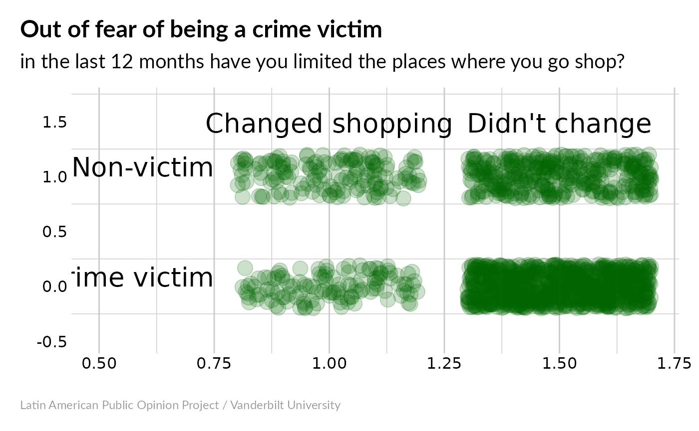

Binomial variables are those that can take on two values: 0/1, yes/no, male/female, etc. A lot of the Americas Barometer variables are of this type.
Here, we’ll focus on one example: indicator vic40 (Out of fear of being a crime victim, in the last 12 months have you limited the places where you go shop?). This variable takes on the following values:
- 1 = Yes
- 2 = No
- 888888 = Don’t know
- 988888 = No response
Before going further, let’s load the necessary libraries:
For now, focus on Honduras in 2014. Assuming that you’ve already downloaded all of the Americas Barometer data (look here if you haven’t), we can load it into an R data frame:
The easiest thing to do is look at the average. We need to make sure that we only look at valid yes/no responses; our average will be meaningless otherwise. The easy way to do this is to create a copy of our data and remove the useless entries. If you want to do this with a different dataset, just replace vic40 below with a different indicator.
#> [1] NAThere are two things going on in that statement. vic40==1 creates a string of TRUE/FALSE values, telling us whether the answer was equal to 1. Taking the mean of this tells us what fraction of people responded ‘yes’ – about 34%.
Averages can be misleading – they didn’t ask everyone, and so the real average might not be exactly 34%. We can see what the likely range of values is by using an exact binomial test:
This tells us that, out of 1558 people who answered the question, 531 said “yes”, so the population average (what we would get if we really asked everybody) has a 95% chance of being between 31.7% and 36.5%.
Just for fun, we can see what would happen if the LAPOP team had only asked 100 people:
#>
#> Exact binomial test
#>
#> data: sum(head(my_data, 100) == 1) and 100
#> number of successes = 30, number of trials = 100, p-value = 7.85e-05
#> alternative hypothesis: true probability of success is not equal to 0.5
#> 95 percent confidence interval:
#> 0.2124064 0.3998147
#> sample estimates:
#> probability of success
#> 0.3If we only had the first 100 survey responses, we can only be confident that the population average is between 21.2% and 40%. Asking more people matters!
Suppose we want to make a snazzy bar chart (because pie charts are so 2004). I’m making this chart using ggplot, which is a really powerful graphics package for R. The syntax can be sort of intimidating; what I do is to keep a “recipe collection” of plots that have looked nice in the past so that I can just make small changes as needed. If you change which indicator you’re looking at, you might need to adjust things a little to keep it looking nice.

That’s all nice, but there’s probably more we can do with this indicator. For example, we can test for correlations with other binomial variables. For example, are men or women more likely to change their shopping patterns? We can do this using Fisher’s exact test.
We’ll want to keep only the observations that have valid answers for both vic40 and sex:
Now let’s put them in a contingency table, and run a Fisher test:
#>
#> Fisher's Exact Test for Count Data
#>
#> data: ct
#> p-value = 1
#> alternative hypothesis: true odds ratio is not equal to 1
#> 95 percent confidence interval:
#> 0.8020483 1.2332385
#> sample estimates:
#> odds ratio
#> 0.9945607Our odds ratio is very close to 1, and our p value is > 0.05, so it’s likely that there’s no real difference in how men and women change their shopping behavior in response to fear of crime.
We could also see if being a victim of crime makes people more likely to change their shopping habits out of fear, by looking at the vic1ext indicator:
#>
#> Fisher's Exact Test for Count Data
#>
#> data: ct
#> p-value < 2.2e-16
#> alternative hypothesis: true odds ratio is not equal to 1
#> 95 percent confidence interval:
#> 0.2491122 0.4292581
#> sample estimates:
#> odds ratio
#> 0.3273094Now we have an odds ratio close to 3 – being a victim of crime makes people about 3x as likely to change their shopping habits. Our very low p-value means that this is probably a significant correlation. If you want something more visual, you could try this:

Now it’s really obvious that most non-victims haven’t changed their shopping habits, while a larger fraction of victims have changed theirs.
Where do the people who have made these changes live? I’m going to map this out using the Google Charts API, which looks like the easiest way to make interactive maps in R. For now, we’ll map results by department, which are encoded in the prov indicator. These numeric values need to be translated into ISO-3116-2 region codes.
Now, let’s make our map:
So this is OK – it tells us which departments showed the largest and smallest average values for vic40. Hover over the map with your mouse to see department names and average values. Another way of visualizing this that might be useful is to figure out which departments showed values of vic40 that are significantly above-average (according to an exact Fisher test) and highlight those.
We can also look to see which departments have below-average values of vic40:
So let’s go back to the high-vic40 areas. What’s special about Cortes and Atlantida? Cortes contains San Pedro Sula, which is Honduras’s 2nd-largest city, and Choloma, which is #3. The 4th-largest, La Ceiba, is in Atlantida. Is it possible that all we’re seeing here is urbanization – people in cities experience more crime and more shopping options, so they’re more likely to change their shopping habits? First, let’s see whether vic40 correlates with the urbanization indicator, ur (1=urban, 2=rural).
#>
#> Fisher's Exact Test for Count Data
#>
#> data: ct
#> p-value = 3.509e-07
#> alternative hypothesis: true odds ratio is not equal to 1
#> 95 percent confidence interval:
#> 0.4615961 0.7166913
#> sample estimates:
#> odds ratio
#> 0.5755926So we can be at least 95% sure that there’s a relationship between vic40 and ur. So is there something special about Atlantida and Cortes, or is the urban/rural split the important factor?
#>
#> Fisher's Exact Test for Count Data
#>
#> data: ct_urban
#> p-value = 0.0004039
#> alternative hypothesis: true odds ratio is not equal to 1
#> 95 percent confidence interval:
#> 0.4462986 0.8014430
#> sample estimates:
#> odds ratio
#> 0.5982884So the city-dwellers of Atlantida and Cortes are more likely to change their shopping location than urban people in other parts of the country.
#>
#> Fisher's Exact Test for Count Data
#>
#> data: ct_rural
#> p-value = 0.8224
#> alternative hypothesis: true odds ratio is not equal to 1
#> 95 percent confidence interval:
#> 0.5977162 1.5018907
#> sample estimates:
#> odds ratio
#> 0.9397185The same doesn’t hold for their rural populations – rural residents of Atlantida and Cortes are no more likely to change their shopping habits than rural people elsewhere.
What if we turn this around? Are urban people in Atlantida and Cortes more likely to change their shopping habits than rural people in those departments?
#>
#> Fisher's Exact Test for Count Data
#>
#> data: ct_in
#> p-value = 0.0005159
#> alternative hypothesis: true odds ratio is not equal to 1
#> 95 percent confidence interval:
#> 1.392549 3.621201
#> sample estimates:
#> odds ratio
#> 2.227803This relationship is statistically significant. Note that the odds ratio is less than 1: this is because vic40 takes values of 0=no, 1=yes, while ur takes 1=urban, 2=rural. So an odds ratio less than 1 means that an increase in vic40 will tend to a decrease in ur, and vice versa. Is this relationship also true outside Atlantida and Cortes?
#>
#> Fisher's Exact Test for Count Data
#>
#> data: ct_out
#> p-value = 0.008704
#> alternative hypothesis: true odds ratio is not equal to 1
#> 95 percent confidence interval:
#> 1.089323 1.851058
#> sample estimates:
#> odds ratio
#> 1.419594Yes it is, although the relationship is a little weaker outside Atlantida/Cortes than inside. So what have we learned here? If we take changing one’s shopping habits as a proxy for fear of crime:
- Urban people in Atlantida/Cortes are more afraid than urban people elsewhere
- Rural people in Atlantida/Cortes aren’t any more afraid than rural people elsewhere
- Urban people are more afraid than rural people, both inside and outside Atlantida/Cortes
In general, the urban/rural split is more important than whether people live in Atlantida/Cortes. However, the cities in those departments appear to be worse than the cities elsewhere in the country. We could follow up on this by repeating our analysis using municipio rather than prov, to see which municipalities have more fearful populations. I think this might be harder to map using googleVis, but the statistical analysis should be similar.